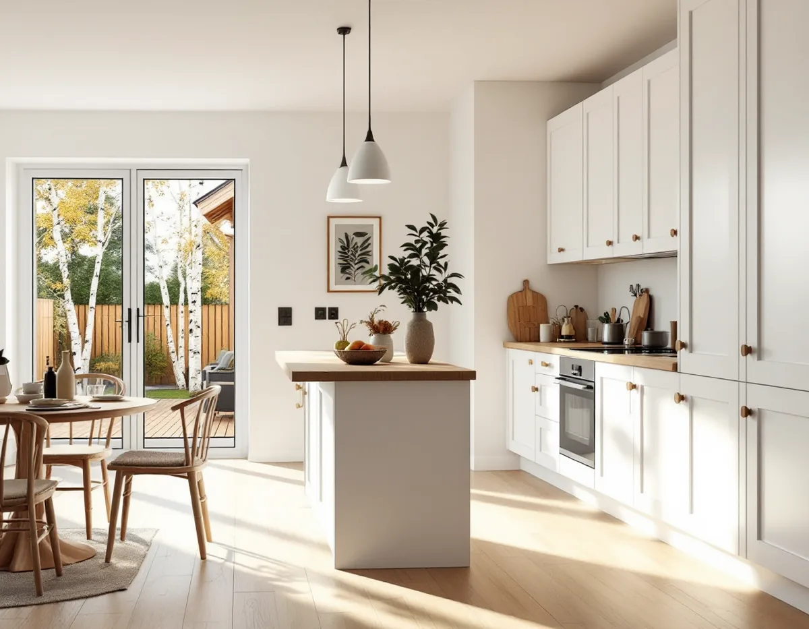
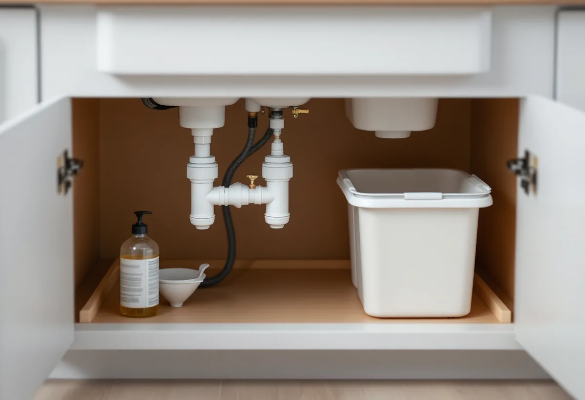

Besök i huset
Vi går igenom köket, väggen mot vardagsrummet, ventilationen och avloppet.
I Täby gör många om köket i ett grupphus eller radhus från 1950-, 60- eller 70-talet, där hela längan byggdes på en gång och köken från början var lika. Andra har en äldre villa vid Roslagsbanan. Vi river, bygger nytt och samordnar el och VVS med behöriga installatörer, och ROT-avdraget drar vi direkt på fakturan.

Täbys äldsta villor ligger vid Roslagsbanan. I Roslags-Näsby byggdes ett åttiotal villor 1907–1920, i Viggbyholm styckades tomter av när hållplatsen öppnade 1903 och i Täby villastad vid kyrkbyn stod omkring 250 villor klara före första världskriget. Näsbypark började som ett område för sommarstugor och hade redan 1933 över 200 bebyggda tomter.
Efter kriget kom grupphusen. Norskogen i Näsbypark byggdes 1957–59, och i Täby kyrkby uppfördes radhusområdena Midgård 1972–73 och Miklagård 1975–76. Gribbylund består i dag mest av typhus från 1970- och 1980-talen. I sådana områden har husen samma planlösning, och köket ligger på samma plats i varje hus.
Det är en fördel när köket ska göras om. Har grannen redan bytt kök finns ofta erfarenhet av var rören går och vad som ryms, och vi kan planera efter samma förutsättningar i hela längan.

Ventilationen följer i stort sett husets ålder. I hus byggda 1961–1975 var frånluft med fläkt vanlig, och från 1976 blev system med både från- och tilluft, ibland med värmeåtervinning, vanligare. Det innebär att radhusen i Midgård och Miklagård kan ha olika system trots att de byggdes med bara några års mellanrum. I de äldre stationsvillorna kan ventilationen fortfarande vara självdrag genom skorstenen.
Köksfläkten ska passa systemet. En fläkt med egen motor som ansluts till ett hus med central frånluft eller till ett FTX-system kan störa balansen, och en installation eller väsentlig ändring av ventilationen kräver anmälan och startbesked. Vi tar reda på vilket system huset har innan fläkten väljs.
Ska väggen mellan kök och vardagsrum bort och den bär, krävs också anmälan. I grupphus där alla hus är byggda lika finns det ibland ritningar som visar konstruktionen, men en konstruktör behöver ändå bedöma just ditt hus.
Sedan 1 december 2025 får ett hus byggas till med sammanlagt högst 30 kvadratmeter utan bygglov, om tillbyggnaden inte går över husets taknock. Tidigare lovfria tillbyggnader räknas in. Närmare tomtgränsen än 4,5 meter krävs bygglov, om inte de berörda grannarna skriftligen har medgett åtgärden – något som ofta blir aktuellt i en radhuslänga.
Täby kommun har i Kulturmiljöer i Täby antagit riktlinjer som inte är juridiskt bindande men används i kommunens bedömningar. För grupphusområden anges att det tidstypiska uttrycket ska hållas samman och att takformer, takmaterial och takfot bör behållas, även vid tillbyggnader. En köksutbyggnad bör därför få samma tak och detaljer som resten av längan. Mer om att bygga till finns under tillbyggnad.
Ändringar på fasaden, som ett större köksfönster eller en ny dörr mot uteplatsen, kräver inte bygglov på ett en- eller tvåbostadshus enligt kommunen – så länge huset inte är särskilt värdefullt, inte ligger i ett särskilt värdefullt område och detaljplanen inte har utökad lovplikt.
Avloppsvattnet från Täby går till Käppala avloppsreningsverk på Lidingö, och kommunen ber hushållen att hålla fett borta från avloppet eftersom det ger stopp i ledningar och problem i pumpstationer. Torka ur stekpannor och ugnsformar innan disk, och samla upp matolja i en plastflaska. Kommunen delar ut fettrattar som skruvas på en PET-flaska via sin avfalls- eller VA-enhet.
När köket ändå byggs om är det läge att tänka på det: plats i diskbänksskåpet för sortering och en flaska för fett, och ett vattenlås som går att komma åt. Gamla avloppsrör under diskbänken byts ofta i samma veva. Se köksrenovering i Stockholm för val av nivå och planering.
Vi går igenom köket, väggen mot vardagsrummet, ventilationen och avloppet.
Vi kontrollerar om något kräver anmälan eller lov och om grannar behöver medge en utbyggnad.
Du får ett skriftligt förslag där arbete och material står var för sig.
Den gamla köksinredningen rivs och vatten och el kopplas bort.
Rör, el och fläktanslutning dras, och golv, väggar och skåp monteras.
Vitvaror och belysning kopplas in och provas, och du får skötselråd.
Du får 30 procent av arbetskostnaden i rotavdrag, högst 50 000 kronor per person och år och högst 75 000 kronor tillsammans med rut. Enligt Skatteverket räknas i småhus bland annat att sätta kakel och klinker, att måla eller lacka köksluckor, att tapetsera och att montera fast köksinredning och installera vitvaror i samband med en omfattande renovering.
Att reparera en diskmaskin är inte rotarbete. Är huset yngre än fem år får arbetet bara återställa det skick det hade från början. Vi drar avdraget direkt på fakturan.
I grupphus och radhus är förutsättningarna ofta kända, och det som skiljer är om väggen mot vardagsrummet ska bort, om ventilationen behöver anpassas och vilken inredning du väljer. En utbyggnad är ett större projekt med grund, stomme och tak. Platsbesöket är gratis och du får ett skriftligt kostnadsförslag.
Planering, el, VVS, fläkt och väggar.
Köksrenovering i Stockholm →Takbyte, takbesiktning och plåtarbeten.
Takläggare i Täby →Näsbypark, Viggbyholm och Gribbylund.
Takrenovering i Täby →Detaljplan, Q-märkning och VA-inkoppling.
Attefallshus i Täby →Kulör per kvarter och provytor.
Fasadmålning i Täby →Villastäder och grupphus i Täby.
Fönsterbyte i Täby →Laga och slipa golvet efter en riven vägg.
Golvslipning i Täby →Stationsvillor, funkis och grupphus i Täby.
Plåtslagare i Täby →Betongpannor, kedjehus och tegelvillor.
Takbyte i Täby →Ny tapet mot lister och foder.
Tapetsering i Täby →Byle, kyrkbyn och detaljplanen.
Tillbyggnad i Täby →